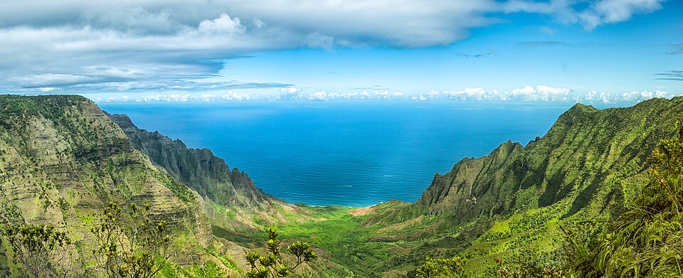

Kalalau
Place: Kalalau, Nā Pali Coast, Kauaʻi
Type: Valley / beach / trail / cultural landscape
Story it tells: A remote valley whose isolation supported Hawaiian communities for centuries and whose name preserves a story of wandering and separation.

Kalalau refers to the valley, beach, trail, and surrounding land along Kauaʻi's Nā Pali Coast. The name is often translated as “the straying,” tied to a story recorded by Mary Kawena Pukui in which travelers searching for two beautiful swimmers wandered off course through the valley. Whether interpreted literally or symbolically, the story reflects a place long associated with distance, difficulty, and the challenge of navigating one of Hawaiʻi's most rugged landscapes.
Despite its modern reputation for isolation, Kalalau was once home to thriving Hawaiian communities. The valley's broad floor, heavy rainfall, and stream network supported extensive loʻi kalo cultivation, while the ocean provided fishing resources. Archaeological evidence and historic accounts show that many generations of Hawaiians lived here, shaping the landscape through terraces, trails, and agricultural systems that allowed communities to flourish along the otherwise steep Nā Pali coastline.
The valley's dramatic topography helped preserve that way of life. Surrounded by cliffs rising more than 2,000 feet above the valley floor, Kalalau remained difficult to access even after western contact. When British fur trader George Dixon sailed past the coast in the late eighteenth century, he mistakenly concluded that the area was uninhabited. He simply didn't know what he was looking at. Homes and agricultural features blended into the landscape, making a populated valley appear empty from the sea.
Today, most visitors reach Kalalau by hiking the Kalalau Trail, which begins near Keʻe Beach and follows the Nā Pali Coast for roughly eleven miles. Others arrive by kayak when ocean conditions allow. Although Kalalau is now one of Hawaiʻi's most famous hiking destinations, its significance extends beyond recreation. The valley preserves evidence of centuries of Hawaiian settlement, agriculture, and adaptation to one of the most dramatic environments in the islands.
Kalalau remains one of the most recognizable places in Hawaiʻi because of its beauty, but its deeper story is one of people and culture. The valley's name, traditions, and archaeological features continue to reflect the lives of those who once called this remote corner of Kauaʻi home.